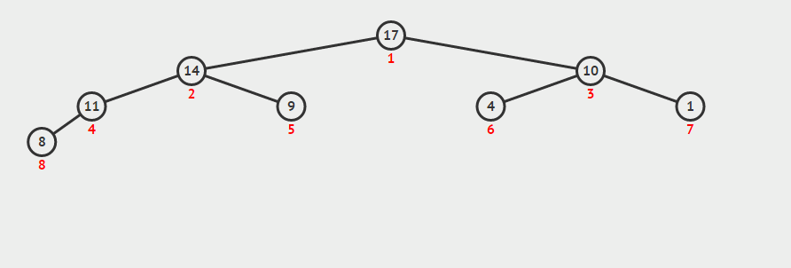

原文连接:https://www.cnblogs.com/lemonyam/p/10831120.html
归并排序：
1、是建立在归并操作上的一种排序算法，该算法为分治法的一个应用
2、步骤：
假设待排序序列为 R[0...n-1]，并采用二路归并
a、将 R 划分成长度相同或相差为 1 的两个子序列 R1，R2
b、递归地将子序列 R1 和 R2 划分，直至子序列长度为 1
c、两两合并子序列，同时进行排序，直至序列长度为 n，如合并 [1, 4] 和 [2, 3] ==> [1, 2, 3, 4]
注：n 路归并即将序列划分成 n 个子序列，一般 n = 2
分治法是把问题实例划分成若干个子实例，并分别递归地解决每个子实例，然后把这些子实例的解组合起来，得到原问题实例的解


void merge(std::vector<int>& nums, int left, int mid, int right)
{
int len = right - left + 1;
int* temp = new int[len]; // 辅助空间O(n)
int index = 0;
int i = left; // 前一数组的起始下标
int j = mid + 1; // 后一数组的起始下标
while (i <= mid && j <= right) {
// 选取较小的那一个
temp[index++] = nums[i] <= nums[j] ? nums[i++] : nums[j++];
}
// 将未放回辅助空间的子序列全部放回去（由于分治，子序列里面已经是排序好了的）
while (i <= mid) {
temp[index++] = nums[i++];
}
while (j <= right) {
temp[index++] = nums[j++];
}
// 深拷贝
for (int k = 0; k < len; k++) {
nums[left++] = temp[k];
}
// 使用 new 关键字创建的空间在堆，需要主动删除，而平时的变量声明一般在栈里，由计算机自动删除并释放空间
delete temp;
}
void mergeSort(std::vector<int>& nums, int left, int right)
{
if (left >= right)
return ;
int mid = (left + right) / 2;
mergeSort(nums, left, mid);
mergeSort(nums, mid+1, right);
merge(nums, left, mid, right);
}注：深拷贝可认为拷贝后指针所指地址不同，但内容相同；而浅拷贝不止值相同，连指针所指地址也相同，会受到原来内容改变的影响
堆排序：
1、堆的性质：
a、在数据结构里，堆是一棵近似的完全二叉树，除最底层，其他都是全满的（注意和满二叉树的区别）
b、树的每个节点对应数组中的一个元素，其根节点对应下标为 0 的元素
c、下标为 i 的元素，其父节点下标为 (i+1) / 2 - 1，左孩子下标为 2*i + 1，右孩子下标为 2*i + 2
d、最大堆中，父节点的值必须大于它的子节点的值；而最小堆则必须小于
2、步骤：
a、建立最大堆，方法详细看代码
b、将最大堆的第一个元素（最大值）取出，然后拿最后的元素放到下标为 0 的位置，重新调整最大堆（如下图）
c、重复操作 b 直至到第一个元素，此时该堆已变成最小堆

//向下调整
void siftDown(std::vector<int>& nums, int star, int last_index)
{
int i = star;
int j = i * 2 + 1;
// 记录要调整的节点
int temp = nums[i];
while (j <= last_index) {
// 记录较大的那个子节点
if (j < last_index && nums[j] < nums[j+1])
j++;
// 若父节点大于等于最大的那个子节点，则退出循环，否则交换这两个节点
if (temp >= nums[j])
break;
else {
nums[i] = nums[j];
// 向下寻找子节点
i = j;
j = 2 * j +1;
}
}
// 循环结束后 i 的位置即为要调整节点的新位置
nums[i] = temp;
}
void heapSort(std::vector<int>& nums)
{
int len = nums.size();
// 构建最大堆，注意是减 2，因为最后一个节点一定是子节点
for (int i = (len - 2) / 2; i >= 0; --i) {
siftDown(nums, i, len-1);
}
//通过交换使最大堆变成最小堆
for (int i = len-1; i >= 0; --i){
//交换首元素和下标为i的元素
int t = nums[0];
nums[0] = nums[i];
nums[i] = t;
//把最大元素排除在外重构最大堆
siftDown(nums, 0, i-1);
}
}
注：若使用最小堆时，我们只能保证父节点大于子节点，而无法保证兄弟节点的大小关系，因此我们先构建最大堆，再进行堆排序
上面两种排序算法的 main 函数和上一篇冒泡排序的 main 函数一样